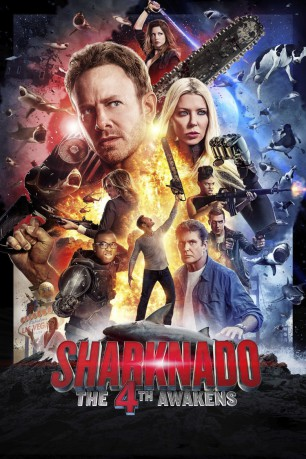

#11396 Sharknado 4 - The 4th Awakens
 
 IMDB-Wertung: 4.0 / 10
IMDB-Wertung: 4.0 / 10  Metascore: 0
Metascore: 0 
Seit den Ereignissen in ‘Sharknado 3’ sind fünf Jahre ins Land gegangen und Hai-Tornados scheinen nur noch eine Erinnerung aus der Vergangenheit zu sein. Kein Wunder, schließlich arbeitet Aston Reynolds, zusammen mit seiner Firma Astro-X an einem neuen System, dass die Atmosphäre energetisch stabilisieren soll. So sollen eventuelle Sharnados in Schach gehalten und verhindert werden. Von einem auf den anderen Tag ändert sich allerdings die Lage. Haie bevölkern plötzlich Orte, an denen sie absolut nichts zu suchen haben – damit hat niemand gerechnet. Fin und seine Frau April müssen sich den Bestien stellen. Ebenfalls mit von der Partie: Aprils Vater Wilford und Fins Vater Gil
Jahr: 2016
Dauer: 85 Minuten
FSK: 16
Land: USA Studio: SyfyTonspuren: DTS - ,
Untertitel:
Auflösung: 1080p (1920x1080) Größe: 6379 MB
Genre: Action, Thriller, Horror, Sci-Fi, Komödie, Abenteuer
Regisseur: Anthony C. Ferrante
Drehbuch: Thunder Levin
Soundtrack: Christopher Cano, Chris Ridenhour
Darsteller:
- Ian Ziering als Fin Shepard
 Tara Reid als April Wexler
Tara Reid als April Wexler- Masiela Lusha als Gemini
 Cody Linley als Matt Shepard
Cody Linley als Matt Shepard- Ryan Whitney Newman als Claudia Shepard
- Imani Hakim als Gabrielle
 David Hasselhoff als Colonel Gilbert Shepard
David Hasselhoff als Colonel Gilbert Shepard- Tommy Davidson als Aston Reynolds
- Cheryl Tiegs als Raye
- Christopher Shone als Little Gil
- Nicholas Shone als Little Gil
 Gary Busey als Wilford
Gary Busey als Wilford- Susan Anton als Betty (Gambler)
- Cynthia Bailey als Tech Addison
- Jillian Barberie als Train Passenger
- Benjy Bronk als Chicago Reporter
- Duane 'Dog' Chapman als Chop Top
- Todd Chrisley als Todd Chrisley
- Grayson Chrisley als Grayson Chrisley
- Savannah Chrisley als Savannah Chrisley
- Stacey Dash als Mayor Mansfield
- Jay DeMarcus als Zimmerman
- Justine Ezarik als Shatner
- Dan Farr als Dan Farr
- David Faustino als Bud
- Erika Jayne als Tech Frances
 Gilbert Gottfried als Ron McDonald
Gilbert Gottfried als Ron McDonald- Lori Greiner als Lori Greiner
 Steve Guttenberg als Colton
Steve Guttenberg als Colton- Gary Herbert als Background
- Brandi Glanville als Tech Whitley
- Hayley Hasselhoff als Supervisor Mary Jane
- Taylor-Ann Hasselhoff als Pilot Shaelyn
- Robert Herjavec als Supervisor Parker
- Kym Johnson Herjavec als Supervisor Gwen
 Lloyd Kaufman als Astro Tech Kaufman
Lloyd Kaufman als Astro Tech Kaufman- Carrie Keagan als Supervisor Martindale
- T'Keyah Crystal Keymáh als Tech Terry
- Daniel Logan als Captain Fett
- Andre Meadows als Train Conductor
- Donna Mills als Supervisor Wink
- Kenya Moore als Monique
 Natalie Morales als Natalie Morales
Natalie Morales als Natalie Morales- Vince Neil als Vince Neil
- Roy Nelson als Donnie (Paparrazo)
 Wayne Newton als Wayne Newton
Wayne Newton als Wayne Newton- Gena Lee Nolin als Neely
 Alexandra Paul als Holden
Alexandra Paul als Holden- Drew Pinsky als Pastor
- DeStorm Power als National Guardsman
Datei: X:\6-Hexalogie(A-Z)\Sharknado\Sharknado 4 - The 4th Awakens (2016, FSK16, 1920x1080).mkv seit 29.06.2019
Festplatte: HD Collection-3(N-Z)-6(A-Z)
 Es gibt insgesamt 9 Filme in der Gruppe '6-Hexalogie(A-Z)\Sharknado'
Es gibt insgesamt 9 Filme in der Gruppe '6-Hexalogie(A-Z)\Sharknado'